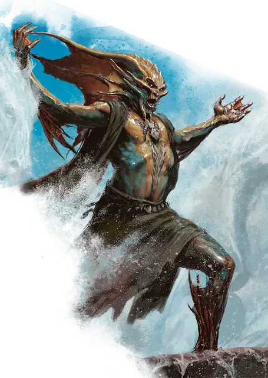

Тритон, повелитель волн
Triton Master of Waves
Средний Гуманоид (Тритон), нейтральный

Класс Доспеха 15 (природный доспех)
Хиты 105 (14к8 + 42)
Скорость 30 футов, плавая 30 футов
| мод | спас | ||
|---|---|---|---|
| СИЛ | 16 | +3 | +3 |
| ЛОВ | 11 | +0 | +3 |
| ТЕЛ | 16 | +3 | +3 |
| мод | спас | ||
|---|---|---|---|
| ИНТ | 10 | +0 | +3 |
| МДР | 12 | +1 | +1 |
| ХАР | 19 | +4 | +7 |
Навыки Атлетика +6, Выживание +4, Природа +6
Сопротивление урону огонь, холод
Чувства тёмное зрение 60 футов, пассивное Восприятие 11
Языки Общий, Первичный
Опасность 8 (3900 опыта)
Бонус мастерства +3
Особенности
Амфибия. Тритон может дышать на воздухе и под водой.
Врождённое колдовство. Базовой характеристикой тритона является Харизма (Сл спасброска от заклинания 15, +9 к попаданию атаками заклинаниями). Он может накладывать следующие заклинания, не нуждаясь в материальных компонентах:
• Неограниченно: луч холода [ray of frost] (см."Действия" ниже);
• 2/день: конус холода [cone of cold];
• 1/день каждое: туманное облако [fog cloud], порыв ветра [gust of wind], стена ветров [wind wall].
Вызов водяной аномалии (перезаряжается после короткого или продолжительного отдыха). Бонусным действием тритон волшебным образом вызывает 1к4 водных аномалий [water weird]. Призванные аномалии появляются в свободном пространстве в воде в пределах 60 футов. Водные аномалии действуют сразу после тритона в той же инициативе и сражаются до тех пор, пока не будут уничтожены. Они исчезают, если тритон умирает.
Действия
Мультиатака. Тритон совершает две атаки Прикосновением волны, и накладывает Луч холода.
Прикосновение волны. Рукопашная атака заклинанием: +7 к попаданию, досягаемость 5 футов, одна цель. Попадание: 22 (4к10) урона холодом.
Луч холода (Заговор). Дальнобойная атака заклинанием: +7 к попаданию, дистанция 60 футов, одно существо. Попадание: 13 (3к8) урона холодом, и скорость цели снижается на 10 футов до начала следующего хода тритона.
Реакции
Морозный щит. Когда видимое тритоном существо, выбирает тритона целью атаки, тритон получает 10 временных хитов. Если атака попадает и уменьшает временные хиты до 0, каждое существо в пределах 5 футов от тритона получает 9 (2к8) урона холодом.
Описание
Тритон, повелитель волн, создает штормы и изменяет приливы и отливы, подчиняя море своей воле. Черпая живительные силы и ледяной холод глубин, эти маги делают океан своим союзником, используя его для защиты своего народа или исполнения желаний Тассы. В то время как страшные угрозы с суши могут привести их на прибрежные отмели, большинство повелителей волн держатся глубин океана.
Хотя многие повелители волн ненавидят сухопутных жителей и нападают на тех, кто вторгается в их воды, большинство из них являются преданными последователями морской богини. Те, кто разделяет их веру или кто приносит искренние подношения Тассе, могут смягчить гнев тритонов — то есть, если они переживут смертоносные ветры и волны, которые обычно предвещают появление этих морских стражей.
Тритон
Умные и дальновидные обитатели моря -тритоны живут богатой жизнью, неизвестной большинству людей, живущих на суше. В то время как волны отделяют большинство тритонов от обитателей суши, иногда обитатели поверхности и глубин вступают в конфликты. В таких случаях тритоны оказываются искусными в саботаже океанских судов, использовании водной магии и других способах разжигания ярости моря. Немногие осмеливаются оскорблять тритонов в их домашней среде, но те, кто это делает и выживает, часто узнают, что гнев тритонов не заканчивается на берегу.